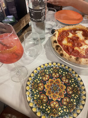
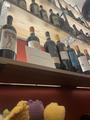
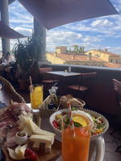
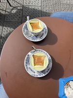

Restaurants

- Il ‘Pizzaiuolo: $, Best pizza I tried in Florence, must try for pizza.
- La Buchetta: $$$. Very good classic Italian food, my dish recommendation would be the gnocchi.
- Osteria del Cinghiale Bianco: $$. Another place to get great classic Florentine food. This is one of Stanley Tucci’s recommendation so getting a reservation is essential. I would recommend the ribolita and the pumpkin tortellini.
- Loggia Roof Bar, $$. Decent caesar salad and amazing charcuterie plate. The juices here were also very good. Very pretty view of the city.
Bars

- Green Street, $$. Must get the slated caramel espresso martini, also recommend the Sarti Spritz. This place has great vibes and delicious drinks, a must visit when in Florence.
- Lion’s Fountain, $. Fun bar with lots of study abroad kids around.
- Old Stove, $. Good drinks and chill vibes here.
- The Michel Collins Irish Pub, $. Able to get a cider here and do karaoke, very fun overall
Cafes

- Shake Café: $. Good place to get an iced latte on the go. Very good lunch food as well.
- La Milkeria: $. Very good fun iced coffee flavors. Good place to study. Can get a bagel here, but do not expect a great bagel.
- Melaleuca: $. Must try café. The cinnamon roll is amazing, and the iced lattes are very good too.
Gelato

- Barrocino, $. My favorite gelato place in Florence. They have a rotating menu of flavors based on the season, but everything I’ve has been delicious.
- La Strega Nicciola, $. Another very good gelato shop that has a few locations in the city center. I would highly recommend the white chocolate and cinnamon flavor.
- Carabe, $. This is a Sicilian gelato and cannoli shop. Both are delicious, but gelato has an icier texture to it.